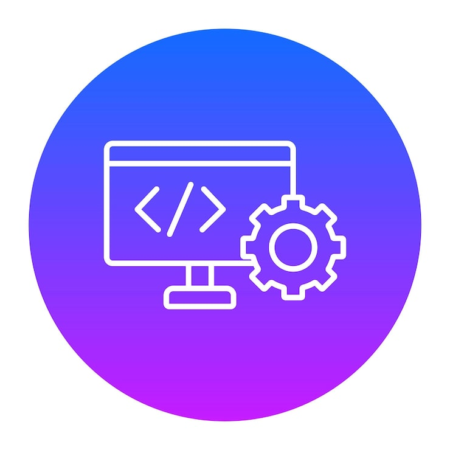
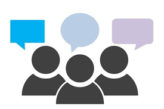

Web enthusiasm
Since I started programming, web development has inspired me and shaped the way I solve problems, a method I apply in my daily life.
I mostly work with Node.js, but I also use other technologies like Symfony or Django when needed.

Python coding
During one of my internships, I discovered the power of Python, and it quicly became a source of inspiration for me. Its simplicity and versatility made me appreciate problem-solving even more, and now, I appply that mindset in both my projects and my daily life.

Communication skills
Communication allows ideas to shared clearly, problems to be solved efficiently, and collaboration to succed. Good communication builds understanding, trust, and strong relationships, both in professional settings and in everyday life.
To be able to work with people from diverse backgrounds, I have learned several languages, including French, English, and German.